The actual dish I made — the method above, in the pan. Each shot is one step of the flow.这就是我做的那一锅——上面的流程，落到锅里。每张对应一步。
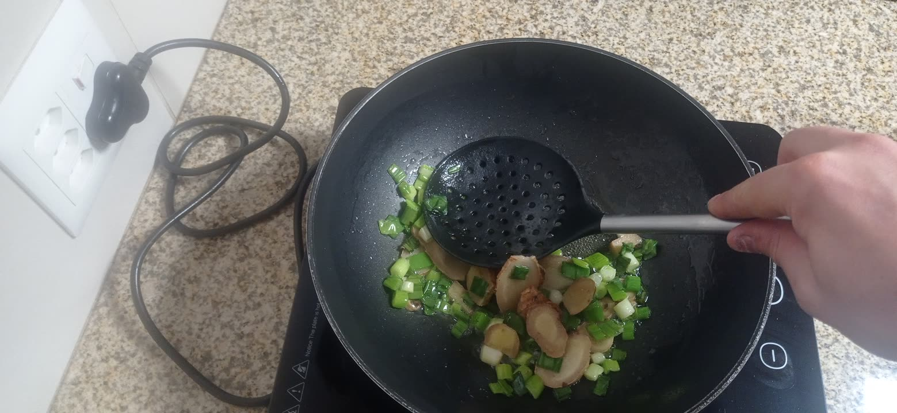
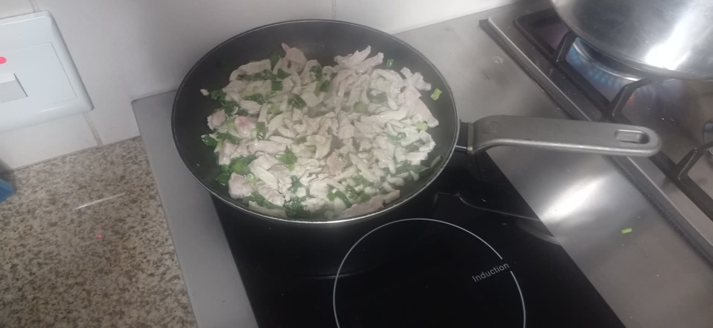
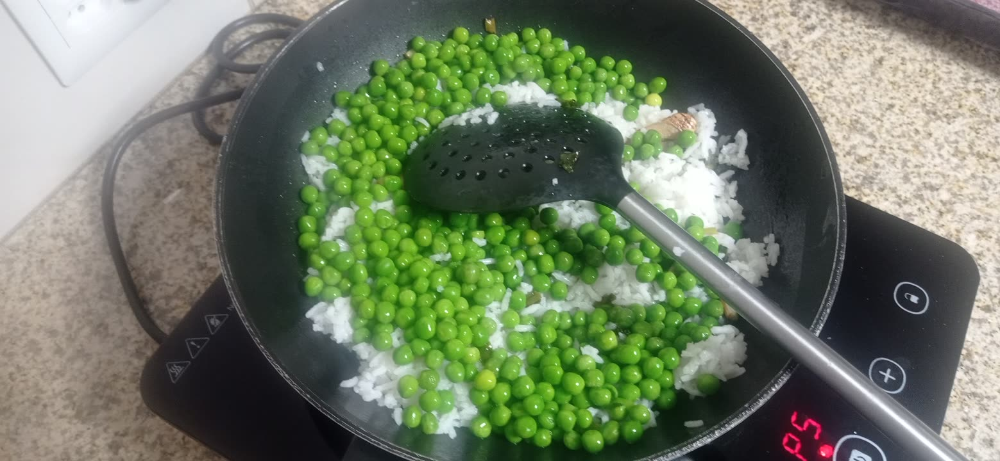
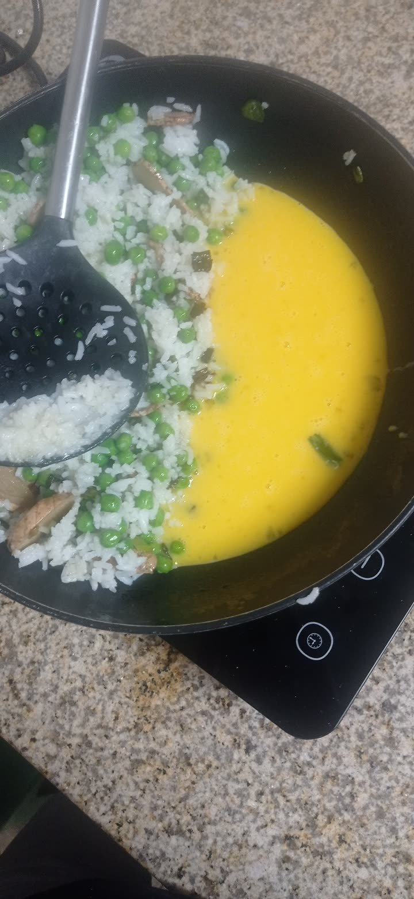
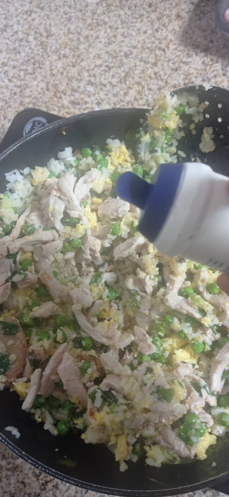
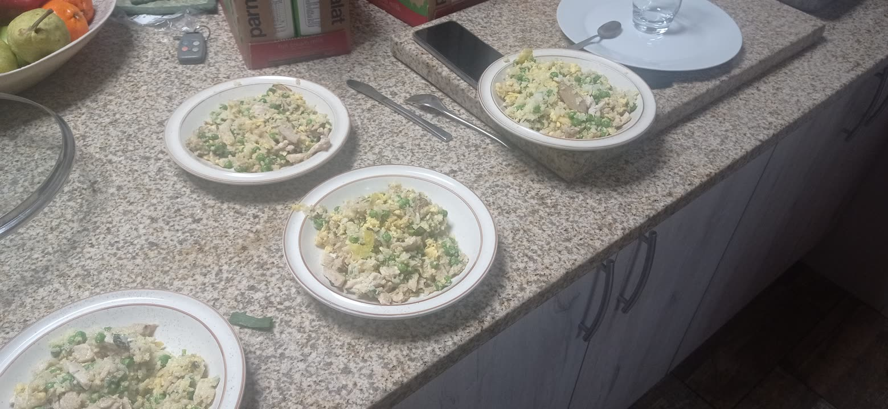
One 饭 family (米饭 · 炒饭 · 隔夜饭), plus the things stirred through it.一个「饭」字家族（米饭・炒饭・隔夜饭），加上炒进去的料。
Just two here — ginger and scallion — fried in hot oil to build the base. No garlic, no chili: this dish is about warmth, not heat.只有两样——姜和葱，热油爆香打底。不放蒜、不放辣椒：这道菜要的是暖香，不是辣。
A minimalist shelf: oil to fry, sesame oil to perfume, salt to season. That's it — no soy sauce, the opposite of Kung Pao chicken.极简调料台：油来炒、麻油来提香、盐来调味。就这些——不放酱油，和宫保鸡丁正相反。
Every new word chained into one telling of the cook — hover an underlined word for its gloss.生词串成一次做菜的叙述——悬停下划线的词看注释。
昨天煮饭多煮了一些，今天就用隔夜饭做麻油蛋炒饭。先把姜切成大片，葱切成葱花；月初还有鸡肉，也切成条。鸡蛋先打散，冷冻豌豆拿出来备好。
锅烧热，倒三勺油，先下姜葱爆香，再放鸡肉炒到变白。然后把米饭和豌豆下锅炒散，让每粒饭都裹上油。
把饭拨到一边，空出的地方倒蛋液；蛋一凝住，就和饭拌匀。起锅前淋一点麻油、放一点盐，尝一口，淡了再加。趁热出锅，盛成四碗——又香又暖，和菜谱上说的一样。
Five dishes from the same cookbook were on the table. The fried rice won — everything was already in the kitchen.同一本菜谱里翻出的五道备选。最后选了炒饭——料家里都有。
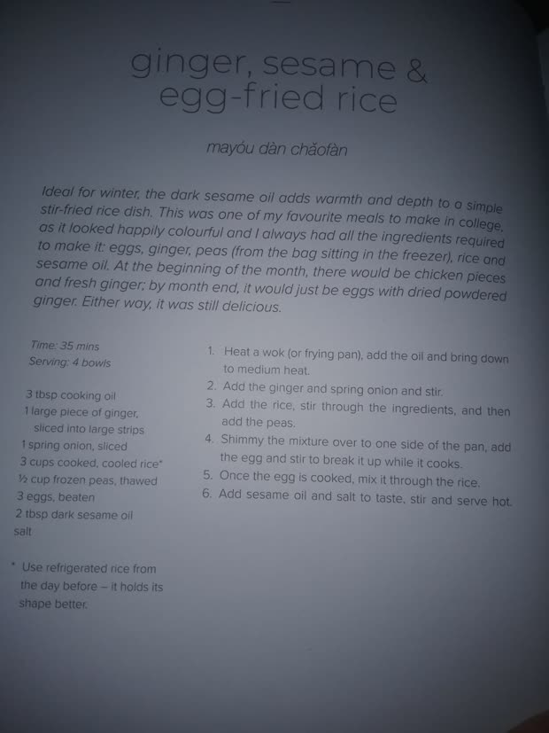
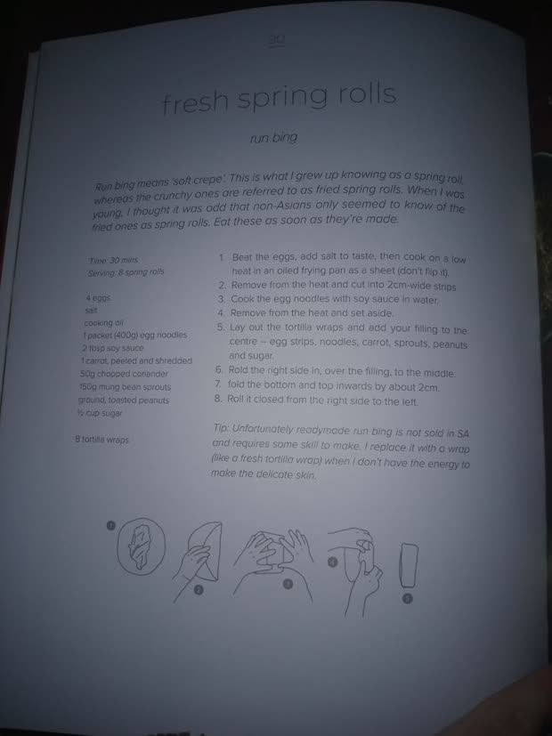
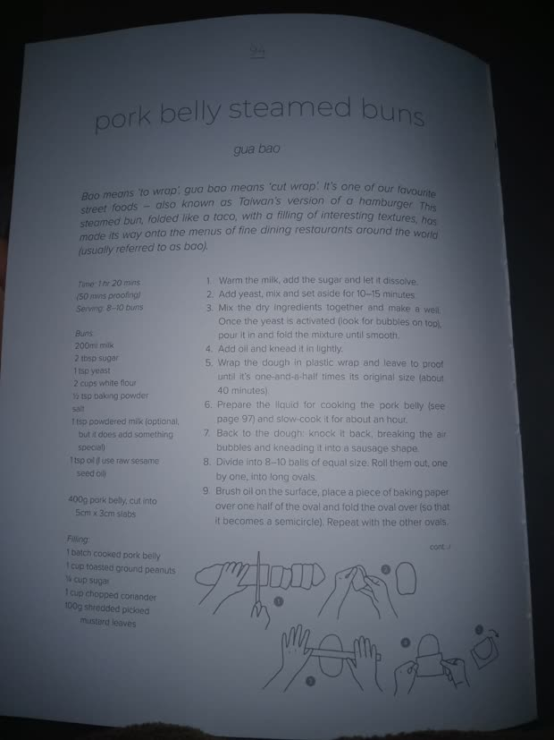
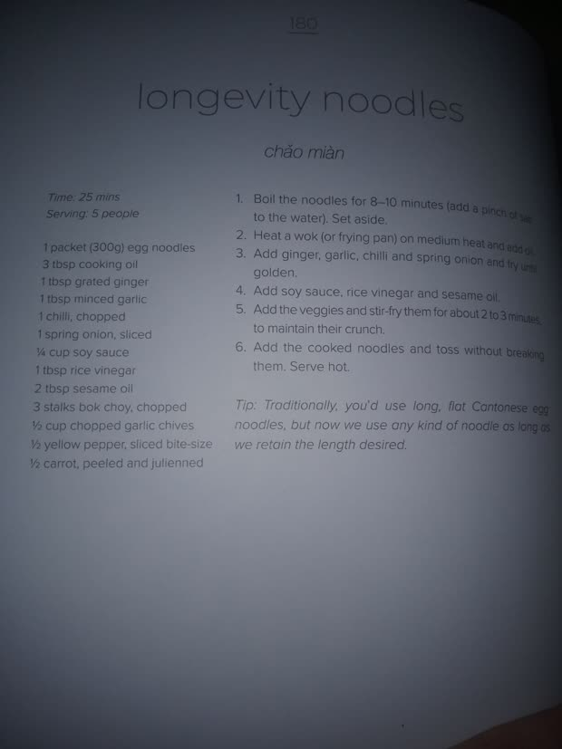
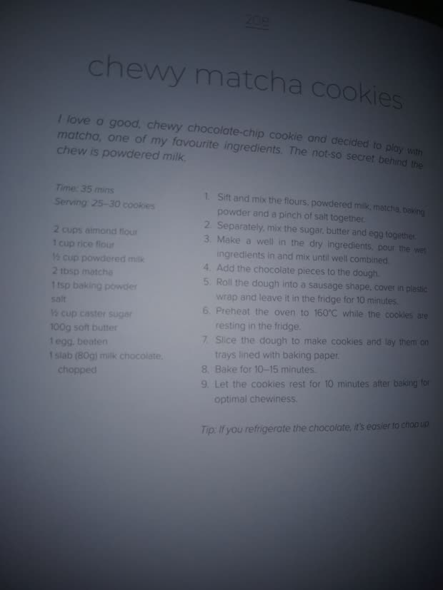